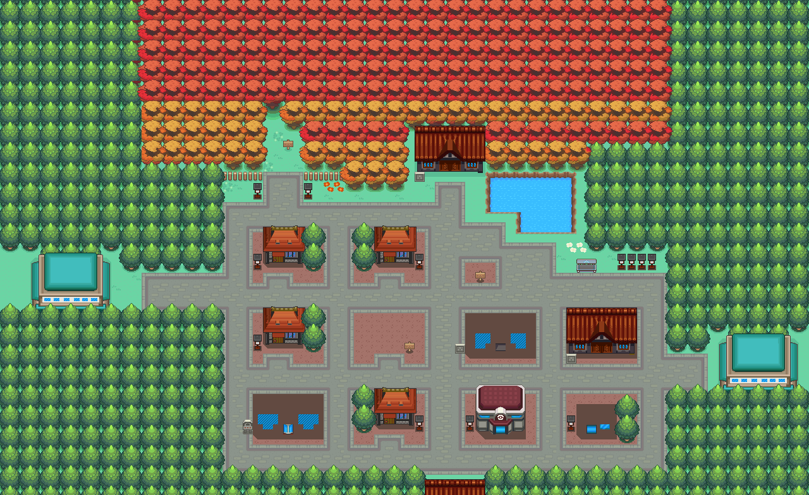
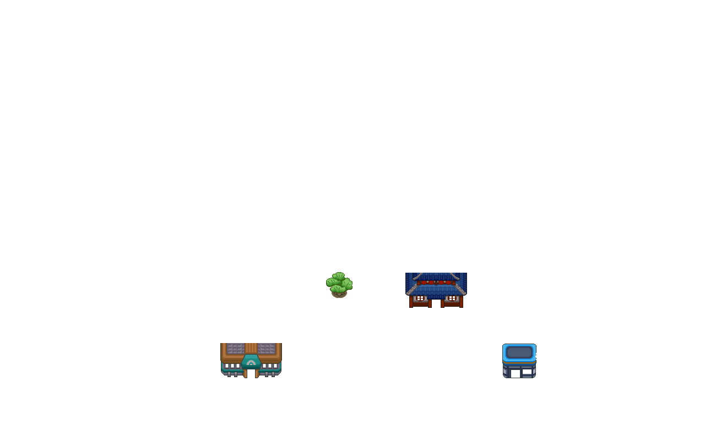

071 卖假货的奸商
一句话目标：找到缘朱市卖假货的奸商并惩罚他。
接取地点：缘朱市一处室内（地图 48:6，背景音乐为宝可梦中心曲目）的受害者，坐标（6,15）；入口在城区（49,42）。地图页：../../wiki_export/world/pages/maps/g48_n006.md
准备条件：主线推进到脚本以旗标 4246 判定的阶段；随身携带至少 10000$（购买假羽毛时需要，战后全额退还）。
操作步骤
- 与受害者对话。他讲述被一名自称贩卖凤王羽毛的商人欺骗，买下后才发现是大嘴雀羽毛；请你找到并惩罚奸商。接受委托（置位 6012）。他提示奸商全身黑衣黑帽，在人群中很显眼。
- 在缘朱市城区（地图 3:70）找到黑衣黑帽的奸商，坐标（53,23）。地图页：../../wiki_export/world/pages/maps/g03_n070.md
- 与奸商对话，他推销“凤王的羽毛”并索价 10000$： - 选择拒绝：他骂“不要吗！滚一边去！”，可再次搭话。 - 选择购买（需≥10000$）：支付 10000$，得到美丽之羽（道具 117）×1；主角随后发现那只是普通大嘴雀的羽毛。
- 识破假货后奸商拒绝退款并挑衅，进入与奸商（训练家和幸，编号 340，3 只宝可梦）的对战。
- 战胜后奸商道歉，退还 10000$，并交出体力之羽、肌力之羽、抵抗之羽、智力之羽、精神之羽、瞬发之羽各 1（道具 57–62），随后与同伴离场（置位 6020）。
- 回到受害者处交付。受害者给出报酬，任务完成（置位 6006）。
交付检查
需先与奸商完成对战并置位 6020，受害者才会进入交付对白。
奖励
- 4000$
- 4 点 BracerPoints
- 美丽之羽（道具 117）×4、经验糖果 S（道具 537）×2（受害者交付）
- 奸商退还 10000$，另给 6 种羽毛各 1（道具 57–62）
道具链接：../items/0117.md、../items/0537.md、../items/0057.md、../items/0058.md、../items/0059.md、../items/0060.md、../items/0061.md、../items/0062.md
容易卡住的位置
- 接受委托后奸商才会进入售卖剧情；未接受时只有普通对白。
- 必须选择购买（支付 10000$）才会触发识破假货与对战；钱不足时奸商只会说“你的钱根本不够嘛！”。
- 购买得到的假羽毛不会被回收，会留在道具栏。
来源与待补字段
- 来源包：data/quest_packets/071.json；脚本 0x08AF29C6、0x08AF2A0A、0x08AF2A63、0x08AF2AA7、0x08AF2D77、0x08AF2EA1、0x08F5BA74；训练家 340。
地点地图
共享RGB底图；点击可缩放定位。数字对应本页相关地点，不代表地图上全部事件。
缘朱市


1 卖假货的奸商（6,15）
缘朱市


地图范围记录：当前资料没有精确人物／遭遇坐标。